Sleepwalking the Pluriverse, filmed performance (Guangzhou, 2020)
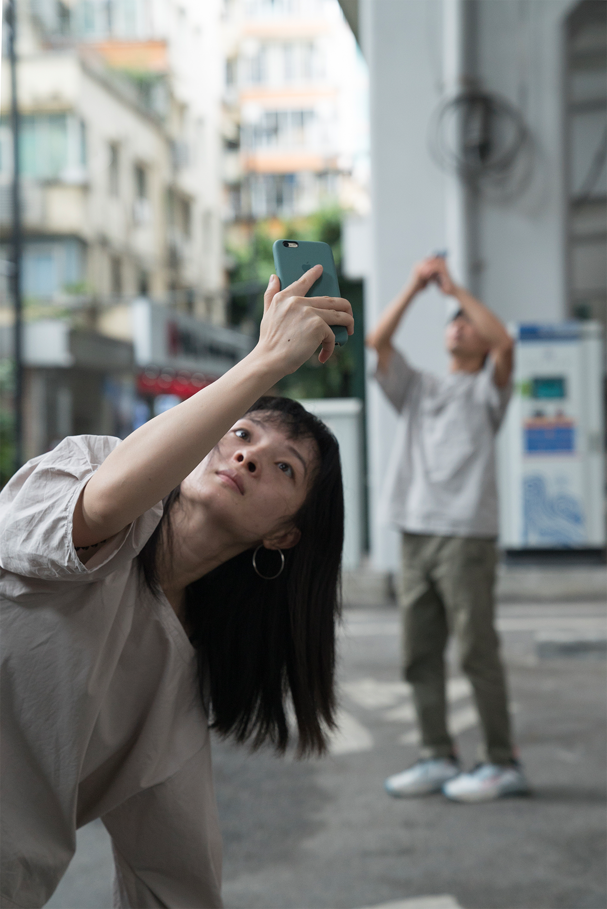 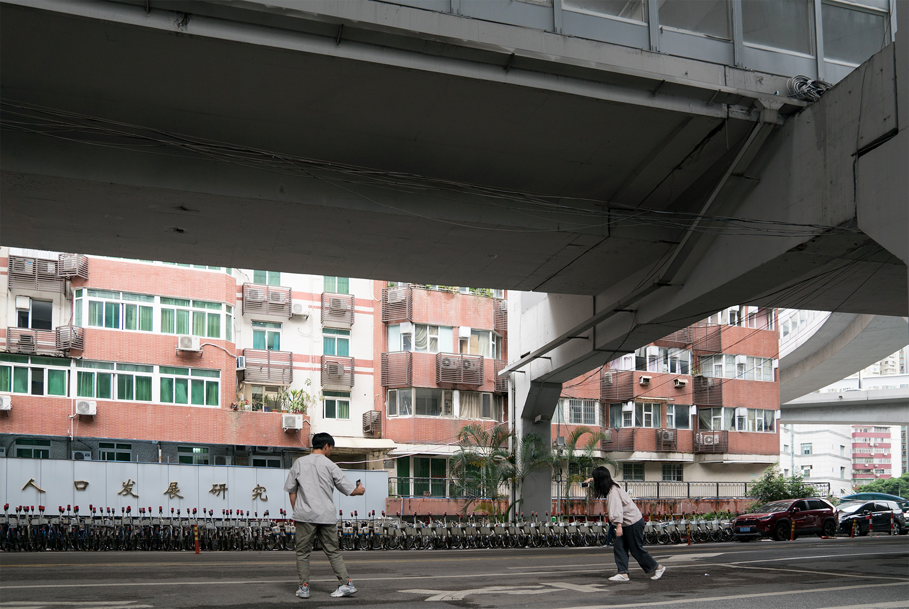 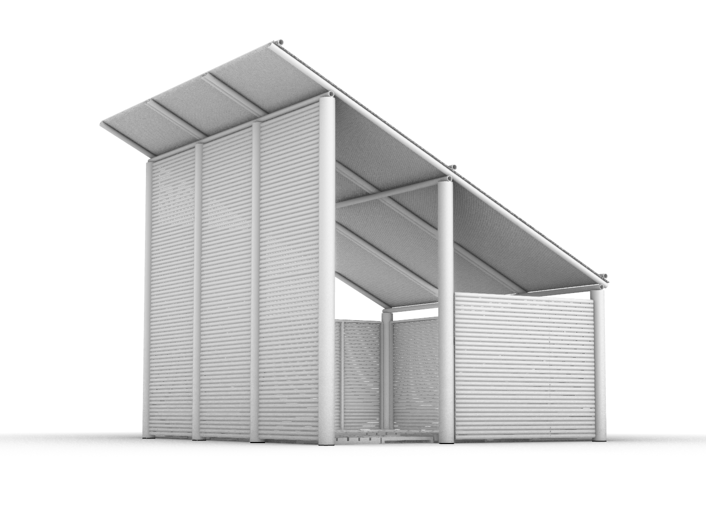 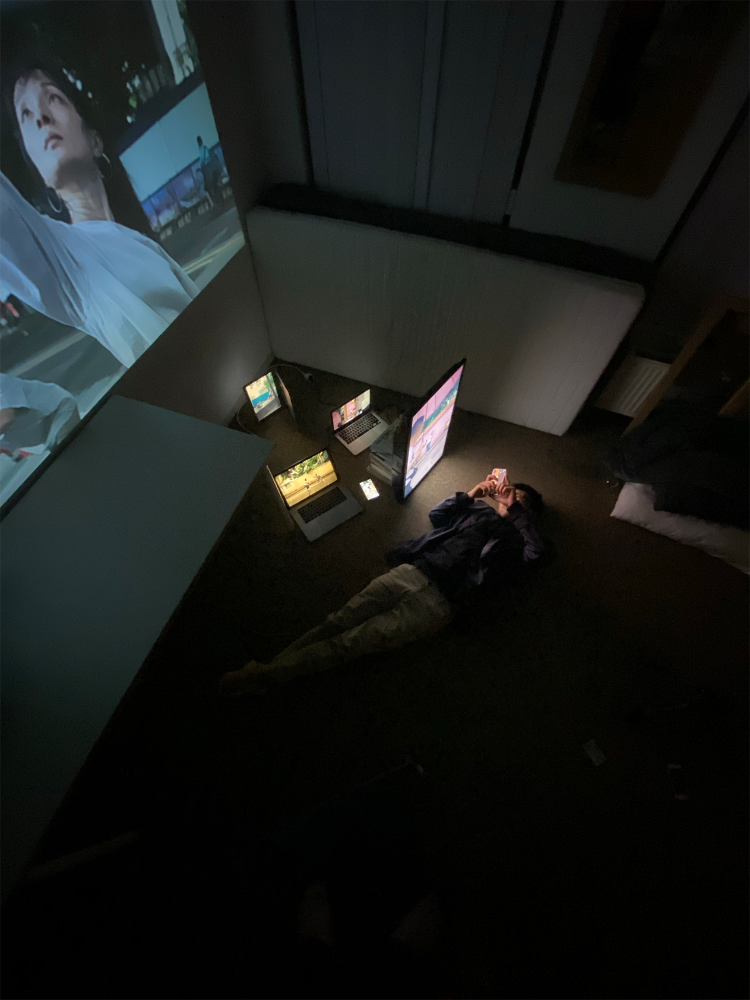
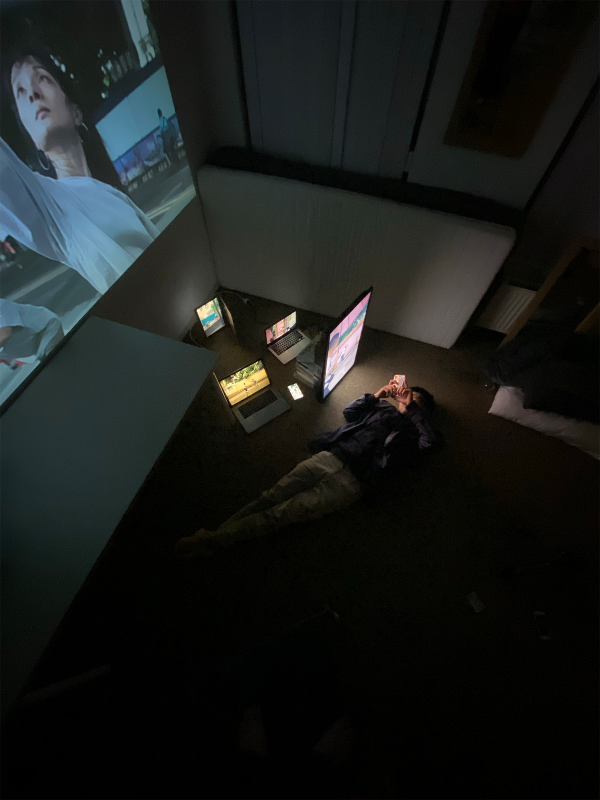
Pete Ho Ching Fung
Pete Ho Ching Fung’s situated practice explores the metaphysics of individual and collective lived experiences. Often using ambiguity as an aesthetic strategy, his work seeks to quietly disrupt the single stories of known knowledge(s),
social relations, designed environments and technology. The work is materialized in images, words, interventions, curations, collaborations, theoretical and artistic research.
He holds an MA in Contextual Design from Design Academy Eindhoven and a BA in Critical Design from Emily Carr University of Art and Design. Previously, he co-founded
DiscordantProjects, a collective focusing on public engagements, before relocating to the Netherlands. His work has been exhibited, screened and published at Onomatopee, Disegno, Het New Institute, Helsinki
Design Museum and Triennale in Milano, among others.
This site is designed as visual library. For writing please visit,
Design for the Time Being.
Sleepwalking the Pluriverse, filmed performance (Guangzhou, 2020)
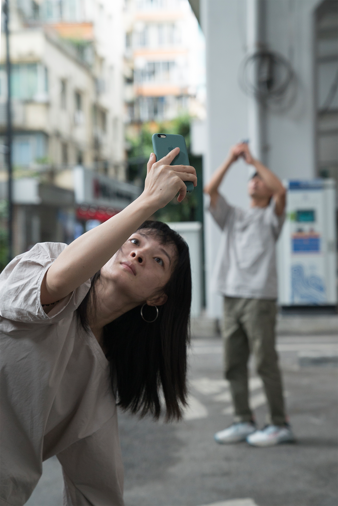 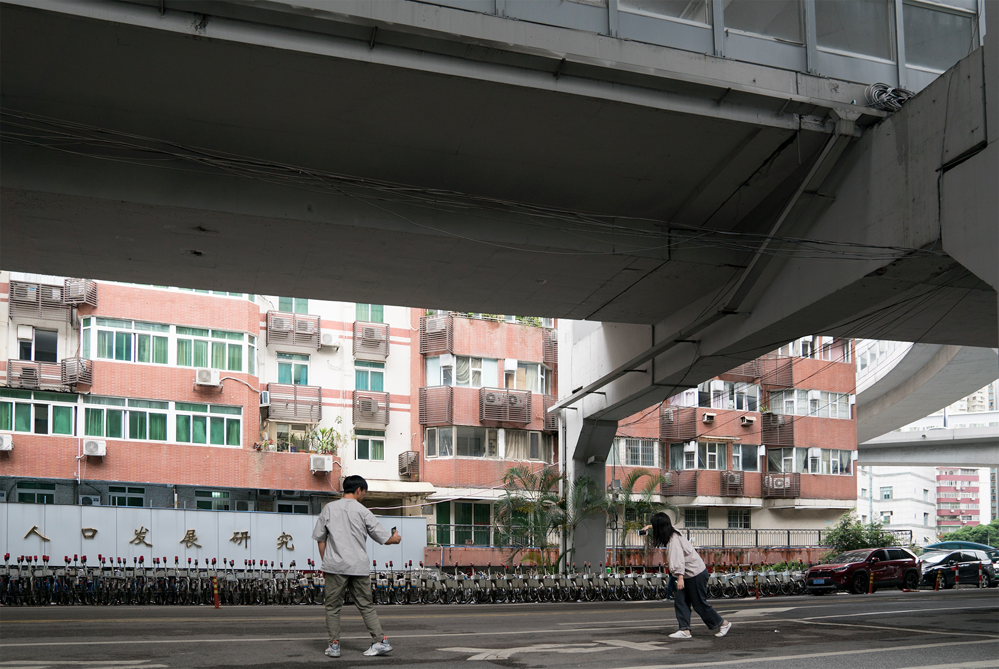 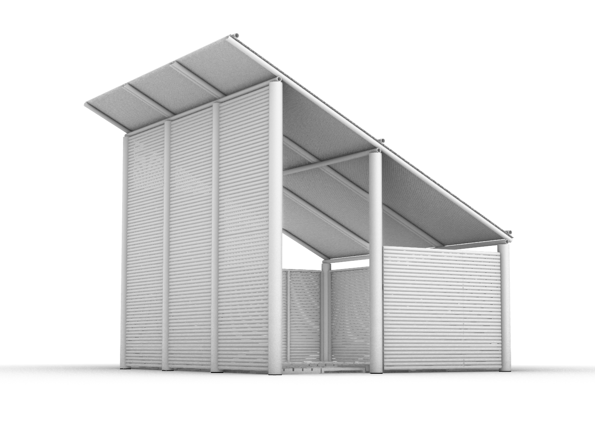
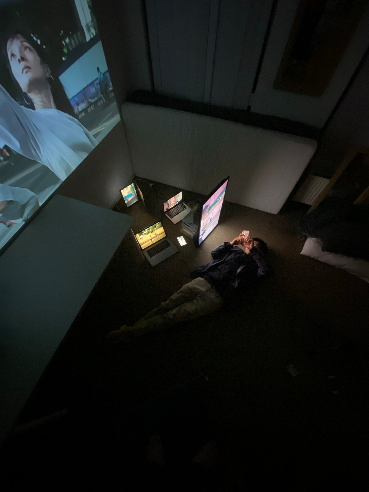
Boring Events Inbetween, digtial photograph (Eindhoven, 2019)
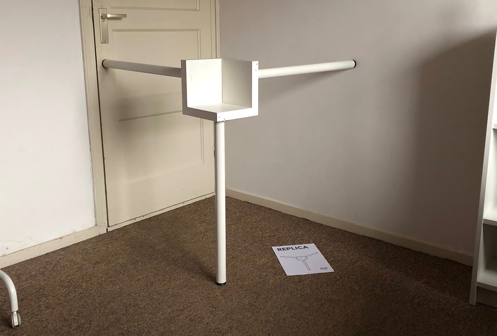 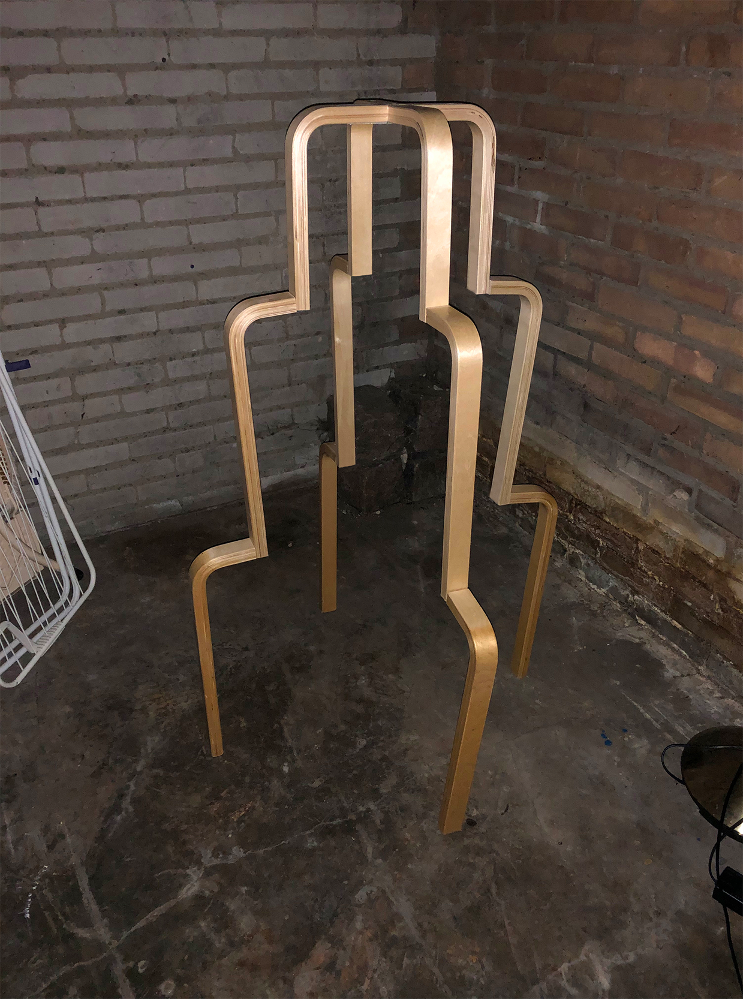 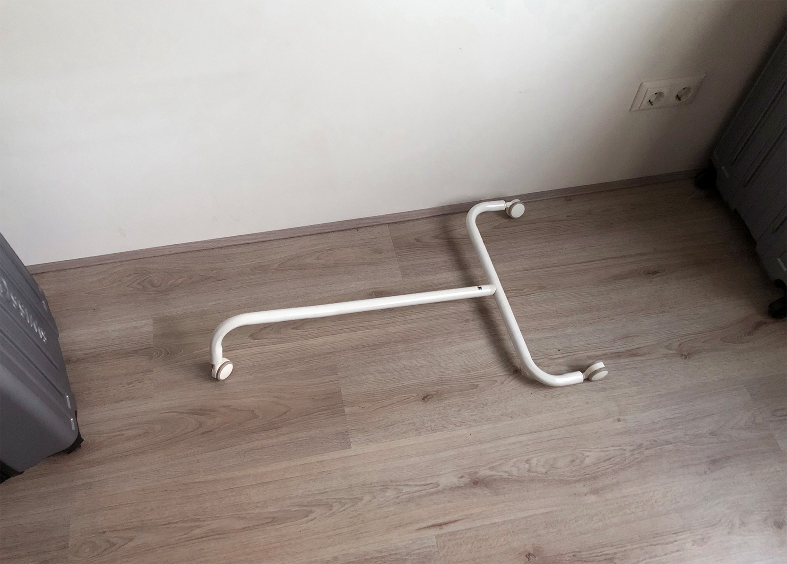 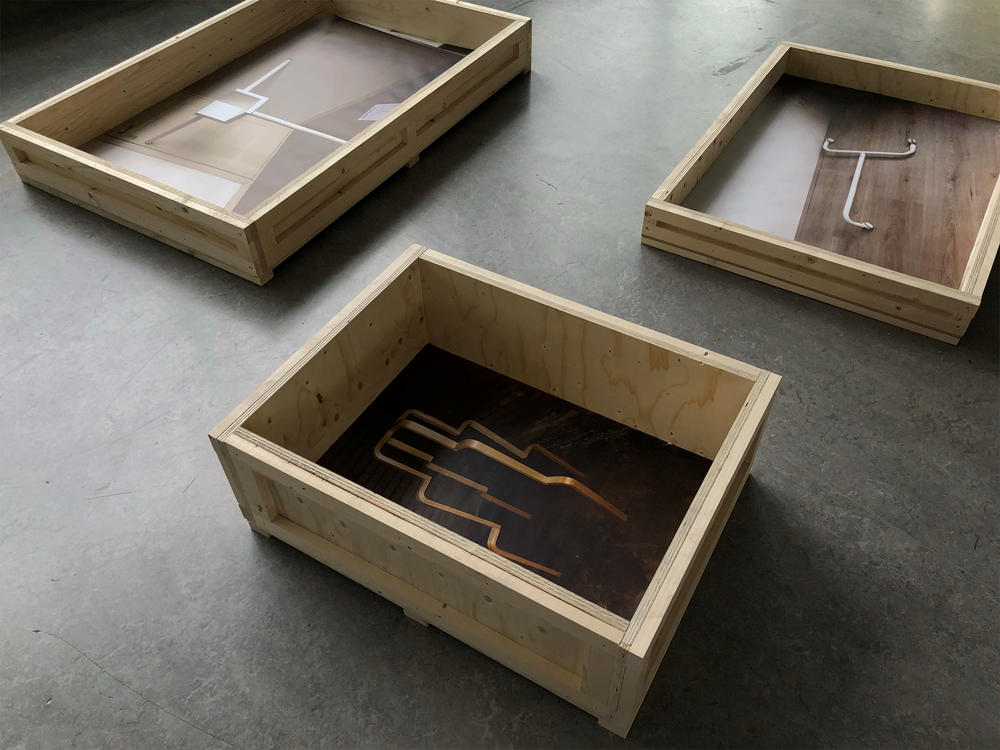